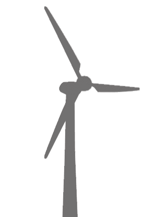
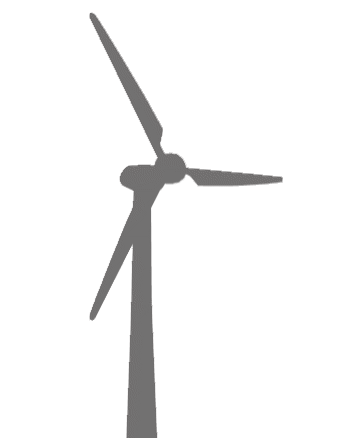

Next Breath
Next Breath is a site dedicated to procuring statistical data on air levels around the United States. Air Quality Index (AQI) is the statistic used to describe the amount of particles in the air. In general, the higher the AQI means the more potential dangerous pollutants in the air. With this in mind, our site gathers data and displays it into helpful graphs to inform the user about their area. With this knowledge, we can start taking steps into preserving air quality! Welcome to Next Breath!
What is AQI?
About us
We are a non-profit organization that is dedicated to providing statistical data on air quality around the nation with information on individual states. We want nothing more than to provide the nation with clean air information. It is through this site that one can look back through the years to view updates to your chosen state's air quality. Whether you want to vacation, move or just care about the air you breath, our website provides helpful data on air quality.